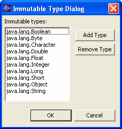
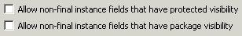
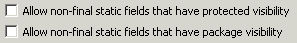

Audit - Rules - Language SemanticsDescriptionThis group contains audit rules that look for language semantic opportunities to make the code more secure. |
Rules:
|
Summary
Enforces Applet fields to be non-private, final and non-static
Description
This audit rule violates all field declarations in Applets that are not private, final and static.
Security Implications
Fields that have all of these characteristics reduce the risk of malicious users from manipulating or gaining internal access to the Applet.
Example
The following integer would be flagged as it is public:
public final int x = 0;
Summary
Avoid using inner classes.
Description
Inner classes are flagged and considered a security hazard by this audit rule.
Security Implications
Inner classes are converted into bytecode just like parent classes. Don't depend on an inner class to keep adversaries from private fields. Remember, an inner class has bytecode separate from parent class, but still has access to private fields in the parent class.
Example
The following inner class declaration and the anonymous class declaration would both be flagged as violations:
public class OuterClass {
public class InnerClass{}
public void foo() {
Runnable runnable = new Runnable() {
public void run(){/*do nothing*/}
}
}
Summary
Refrain from declaring an array public, static and final.
Description
This audit rule flags an array declared public, static and final. Arrays are mutable objects, the final constraint requires that the array object itself be assigned only once, but makes no guarantees about the values of the array elements. Since the array is declared public, a malicious program can change the values stored in the array.
Security Implications
Such arrays are many times assumed to be secure and thus used by the application as a secure field. Malicious users can seek out such fields to exploit.
Example
The following Java Applet code would be flagged as a violation because it declares an array public, static and final:
public final class UrlTool extends Applet {
public static final URL[] urls;
...
}
Summary
Don't return mutable types from methods.
Description
Checks that returned types are either default immutable types like java.lang.Integer or are declared immutable in the audit rule preferences.
Security Implications
Methods that return sensitive data that is passed in a mutable form can potentially allow malicious users access to change the data.
Example
The following method declaration would be flagged (assuming "MutableType" is not declared as immutable in the audit rule preferences):
public MutableType getData() {
return new MutableType();
}

Summary
Getter and setter methods should be declared final.
Description
This rule looks for getter and setter methods that are not declared final.
Security Implications
An attacker can modify the behavior of the class by overriding the getter or the setter. This can lead to unexpected and insecure behavior.
Example
The following code would be flagged as a violation because its getter method is not declared final:
public class Person {
private String name;
public String getName() {
return name;
}
}
Summary
Refrain from using non-final public instance fields.
Description
To the extent possible, refrain from using non-final public instance fields. Instead, let the interface to your instance field be through accessor methods. In this way it is possible to add centralized security checks, if required.
Security Implications
Public, non-final fields are accessible and changeable from anywhere within the application making them potential targets of malicious users.
Example
The following field declaration would be flagged as a violation because it is both public and non-final:
public int width;

Summary
Methods that are not supposed to be overridden should be declared final.
Description
This audit rule looks for non-final, non-abstract method declarations that are declared in a non-final class and are not overridden in subclasses. Such methods should be declared final so that subclasses cannot maliciously redefine the behavior of the method.
Security Implications
A malicious user can redefine the behavior of the method so that it affects the whole class in an unexpected or insecure way.
ExamplecheckSecurity() would be flagged as a violation because it is declared in a non-final class, is not abstract, and is not overridden in subclasses:
public class SecureDataAccess {
protected void checkSecurity() {
...
}
}
Summary
Method should be private if it is not member of an interface and it doesn't override method of superclass and isn't overriden by subtype.
Description
This audit rule looks for non-private method declarations in subclasses of a specified class that are declared in a class and but are neither overridden in subclasses nor are overrides of methods of a superclass.
Security Implications
In weakly protected environments (like applets) a malicious developer can create code that can use non-private methods and thus access data that otherwise should not be accessible.
Example
If MyClass is added to the list of weakly protected classes, the following method declaration whould be marked as violation because this method is non-private:
public class MyClass {
public void func() {
...
}
}
Summary
Do not return internal arrays from non-private methods.
Description
This audit rule flags unsafe set or get of an internal array field, this includes flagging: 1) internal array returns from a non-private method and 2) setting an internal array with parameter given through a non-private method.
Security Implications
With arrays, it is safer to make a copy before the set or return. This way, the internal data cannot be manipulated outside of the class.
Example
Given the following field declaration:
int[] integerArray = ...;
public int[] getIntegerArray() {
return integerArray;
}
Summary
Disallows public static final mutable type fields.
Description
Checks that public static final fields are either default immutable types like java.lang.Integer or are user-specified immutable types, declared through the audit rule preferences.
Security Implications
Public static final mutable fields are accessible and changeable from all points in the application and thus are targets by malicious users.
Example
The following would be flagged:
public static final MutableType mutableType;
Summary
Refrain from using non-final public static fields.
Description
To the extent possible, refrain from using non-final public static fields because there is no way to check whether the code that changes such fields has appropriate permissions.
Security Implications
Public, non-final static fields are accessible and changeable from anywhere within the application making them potential targets of malicious users.
Example
The following declaration would be flagged as a violation because it is both public and non-final:
public static int minutesPerHour = 60;

Summary
When an object is checked for being an instance of one class and then cast to another class that is neither inherited from the checked class nor its ancestor this usually results in a ClassCastException.
Description
This audit rule violates class casts that are preceded with a check of the same instance for being intanceof of the incomparable class.
Security Implications
Such a cast is usually an error which results in a ClassCastException. This may result in an unexpected behavior of an application that could possibly compromise its security.
Example
The following code would be flagged as a violation because it performs a check for one class and then casts the instance on an incomparable class:
if (s instanceof String) {
StringBuffer db = (StringBuffer) s;
...
}
Summary
Local variable or parameter is assigned a value that is never used.
Description
This rule violates cases when local variable or parameter is assigned a value that is either reassigned or simply not used till the end of the scope.
Security Implications
Unused result of an assignment usually indicates inconsistency in the code, possible errors or poorly mantained code, which may result in a security threat.
Example
The following method reassignes a parameter without using its initial value. This is probably a misprint or an outdated code and should be removed:
public void testReassigned(int i) {
i = 10;
...
}